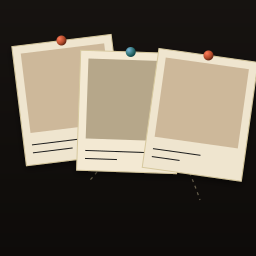
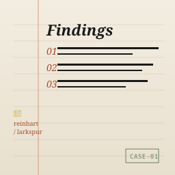
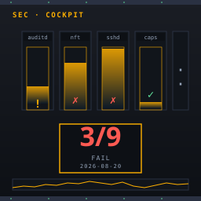
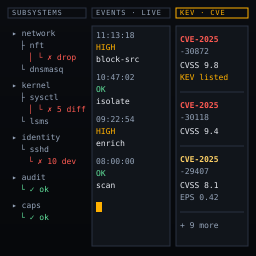
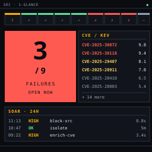
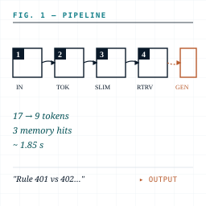
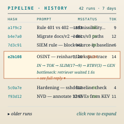

9 variants · 3 surfaces · each variant uses different UI elements from the others. Pick the ones that fit how you actually use the surface — the same data, totally different feel.
Job: go from a question to a saved, annotated subject. Aesthetic: casebook — warm paper, ink, hand-ruled margins, three different layouts for the same data.


Surface rule: OSINT uses casebook aesthetics only. Pick Polaroid Wall for overviews, Casebook Notebook for search results & case-file pages. Do not mix with security or agent aesthetics here.
Job: show what needs attention right now. Hide the rest. Aesthetic: control-room / aviation HMI — single accent, monospace numerics, status-driven color.



Surface rule: Security uses aviation-HMI aesthetics only. Pick Cockpit Panel for the primary hardening view, Console Log + Tree for operator drill-down, and Compact Stat Block for the tray mini-console or screen-saver mode.
Job: make the agent's process legible and inspectable. Aesthetic: textbook figure — white paper, teal ink, mathematical notation, three views of the same pipeline.



Surface rule: Agent uses textbook-figure aesthetics only. Pick Paper Schematic for the live pipeline animation, Live Pulse when you want a darker streaming-only view, and History Diff for after-the-fact run review.
You mentioned a system tray that opens a console for one of these surfaces.
Mockup below is a slim Tk popup (consistent with the existing sec_tray.py pattern) that
opens the Security Dashboard cockpit view in a 720×520 floating window — or any of the others.